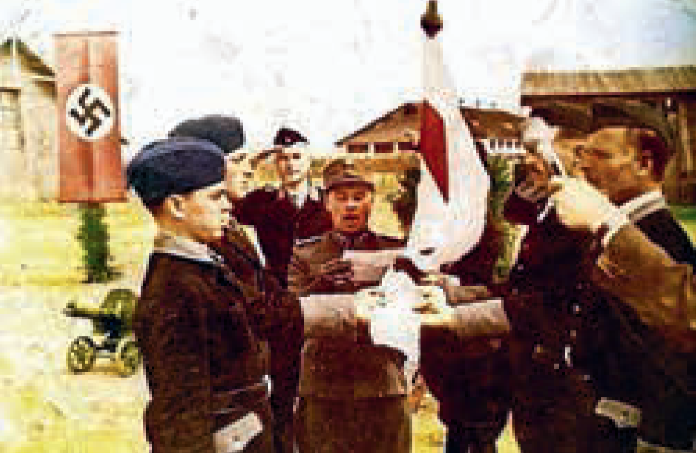
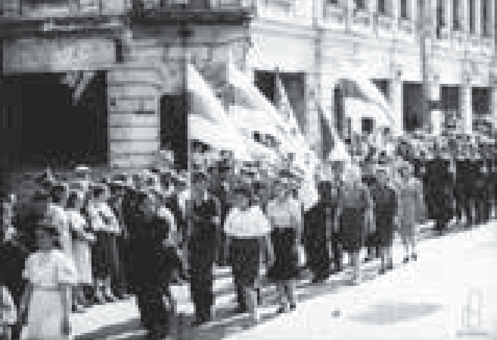

Коллаборационизм
Роль коллаборационистов в геноциде
Осуществлению политики геноцида на оккупированной территории Беларуси способствовали коллаборационисты — люди, которые осознанно, добровольно сотрудничали с германскими оккупантами в их интересах и в ущерб своему государству.
Участие националистических формирований
В годы войны польские, украинские, латышские и литовские националисты посягали на территориальную целостность Беларуси.
Существуют документальные свидетельства их участия в уничтожении мирных жителей Беларуси.
Трагедия Хатыни
Навсегда в памяти белорусов останется трагедия деревни Хатынь, сожжённой вместе с её жителями.
В этом участвовали украинские полицаи в составе 118-го полицейского батальона.
 Скульптура «Непокорённый человек»
Скульптура «Непокорённый человек»
Расправа в деревне Чуденичи
29 марта 1943 года украинские националисты учинили кровавую расправу над жителями деревни Чуденичи Логойского района.
Согнали около 40 человек, в том числе стариков, женщин и детей, в колхозную конюшню, часть из них расстреляли, а остальных заживо сожгли.
В домах расстреляли свыше 60 человек, имущество разграбили, затем все постройки сожгли, угнали в нацистское рабство 8 человек.
Польские националистические формирования. Армия Крайова.
Польские националисты ставили своей задачей захват земель Западной Беларуси, которые в 1939 году в результате освободительного похода Красной Армии воссоединились с БССР.
В период германской оккупации управленческий аппарат в Барановичском, Белостокском, Вилейском, Лидском, Слонимском округах состоял в основном из поляков.
В директивных документах, определявших деятельность Армии Крайовой на оккупированной территории Беларуси, прямо указывалось: «Каждый поляк должен знать: немец и белорус — враги польского народа…»
В феврале 1942 года путём объединения ряда польских подпольных организаций была создана Армия Крайова.
Отдельные формирования Армии Крайовой вели боевые действия как против немцев, так и против белорусских партизанских отрядов, иные — только против белорусских партизан (районы Налибокской пущи, Новогрудка, Виленщины).
С целью зачистки территории от нежелательного населения, которое не поддерживало польские формирования, Армия Крайова совершала террористические операции против мирных граждан (Волковысский, Лидский, Щучинский, Заславский, Дзержинский, Ивенецкий районы, Виленская партизанская зона).
Литовские и латышские формирования.
В рамках расследования Генеральной прокуратурой Республики Беларусь уголовного дела о геноциде белорусского народа установлены факты уничтожения деревень и мирного населения литовскими военно-полицейскими формированиями на территории Минской области.
Они действовали на территории Воложинского района в деревнях Доры и Углы, в деревне Мокрица Мядельского района.
Установлено также, что в период с июня 1941 года по июль 1944 года на территории современной Республики Беларусь литовские коллаборационистские подразделения участвовали в массовом уничтожении мирных жителей.
Так, 3-я рота литовской полиции с апреля 1943 года участвовала в проведении карательных операций против мирного населения на территории Ошмянского района.
Латышские военно-полицейские формирования также участвовали в планомерном уничтожении населения БССР.
Согласно архивным документам и показаниям свидетелей, действия латышских карателей отличались особой жестокостью: большинство людей было уничтожено путём сожжения, утопления, нанесения ран, которые приводили к долгой и мучительной смерти.
Белорусские коллаборационистские организации.
Подавляющее большинство белорусского народа не восприняло нацистскую идеологию и самоотверженно выступило на борьбу против оккупантов.
Это было поистине всенародное движение антигерманского сопротивления, направленное на отстаивание Отечества, сохранение национальных традиций и духовных ценностей белорусского народа, которое стало значительным вкладом в общую борьбу народов Советского Союза против нацистской Германии.
На оккупированной территории Беларуси развернулось острое и непримиримое противостояние патриотической части белорусского общества, отстаивавшей национально-государственные интересы в борьбе с германскими захватчиками, и небольшой горстки тех, кто сотрудничал с оккупантами и предал национальные интересы.
В годы Великой Отечественной войны на территории БССР под контролем немецкой оккупационной власти действовали коллаборационистские формирования: Белорусская краевая оборона, Белорусская народная самопомощь и др.
Из-за малой численности своих охранных и полицейских сил немецкие оккупационные власти уже в июле 1941 года стали привлекать полицаев из местных жителей.
Формирование военизированных частей из белорусов оказалось сложной задачей для оккупантов.
Число частей, которые удалось сформировать из белорусов, было значительно меньше числа батальонов из литовцев, латышей, эстонцев, украинцев и представителей иных национальностей.
В январе 1943 года был создан 13-й белорусский полицейский батальон при СД.
Командные должности вплоть до командира роты занимали белорусы.
В задачи 13-го белорусского полицейского батальона при СД входило: проведение массовых карательных операций против советских партизан и мирного населения на территории Беларуси, охрана территориальных органов СД, тюрем, лагерей смерти, коммуникаций и т.д.
13-й белорусский полицейский батальон при СД принял участие в карательных операциях на территории Минской, Могилёвской и Витебской областей.
Летом 1943 года батальон участвовал в операциях против мирных граждан в Минске.
 Выдержка из протокола допроса обвиняемого по уголовному делу об измене Родине
Выдержка из протокола допроса обвиняемого по уголовному делу об измене Родине
Весной-летом 1942 года немецкие оккупационные власти активно формировали псевдонациональные военизированные организации для оказания содействия в реализации преступных планов Гитлера.
Решение о создании Белорусского корпуса самообороны было принято в июле 1942 года.
В феврале 1944 года для борьбы с партизанами было создано пронацистское вооружённое формирование «Белорусская краевая оборона».
Согласно многочисленным документальным доказательствам, члены этого формирования были задействованы в охране порядка и операциях по борьбе с партизанами на территории Беларуси, участвовали в карательных операциях.
Белорусские коллаборационисты в качестве приветствия в среде нацистов использовали лозунги «Хайль Гитлер» и «Жыве Беларусь».
 Выдержка из протокола допроса обвиняемого по уголовному делу об измене Родине
Выдержка из протокола допроса обвиняемого по уголовному делу об измене Родине
Белорусская народная самопомощь, созданная осенью 1941 года под предводительством И. А. Ермаченко, занималась вербовкой и вывозом населения на принудительные работы в Третий рейх, организацией военного дела, школьного образования, культурой и пропагандой германского нацизма.
После поражения немецко-фашистских войск под Сталинградом и Курском гитлеровцы стали активнее привлекать к себе на службу население оккупированных территорий.
В декабре 1943 года немецкие оккупационные власти создали организацию «Белорусская центральная рада» под руководством Р. К. Островского.
Ему, в частности, были предоставлены полномочия в области организации школьного образования, культуры, социального обеспечения.
Однако Белорусская центральная рада служила гитлеровскому режиму.
Оккупанты использовали коллаборационистов для развития псевдонационального движения, которое проявилось в насаждении псевдонациональных символов (бело-красно-белый флаг, герб «Погоня»), культурных традиций, чуждых населению БССР (празднование дня объявления Белорусской Народной Республики 25 марта).
Бело-красно-белая символика, изображения «Погони» стали использоваться для обозначения белорусской национальной принадлежности в среде добровольных помощников нацистского режима, в том числе вооружённых формирований, участвовавших в карательных операциях.
Бело-красно-белый флаг использовался практически всеми пособниками немецких захватчиков на оккупированной территории БССР: полицаями, Белорусским корпусом самообороны, Белорусской краевой обороной, Белорусской центральной радой и др.
 Белорусские коллаборационисты приносят присягу на верность гитлеровскому режиму  Белорусские националисты на митинге в годы оккупацииКоллаборационистская символика использовалась в пропагандистских целях совместно с символами Третьего рейха и изображениями Адольфа Гитлера, который прославлялся как вождь белорусского народа, несущий освобождение от евреев и большевиков.
Носители коллаборационистской символики разделяли взгляды национал-социалистов и активно участвовали в организации на территории БССР казней военнопленных и мирного населения, грабежей в пользу нацистской Германии, в уничтожении жилья и иного имущества, без которого население обрекалось на долгую и мучительную смерть; убивали партизан, подпольщиков, а также их родственников.
Своей цели — мобилизовать все политические и военные силы против советских войск — оккупационная власть не достигла.
Сильные советские традиции Беларуси и слабо выраженный национализм привели к тому, что политические организации, поощряемые немецкими органами в своём националистическом курсе, быстро оказались в изоляции.
9 августа 2020 года в нашей стране состоялись выборы Президента Республики Беларусь, на которых более 80 % граждан отдали свои голоса за кандидатуру действующего Главы государства — А. Г. Лукашенко.
Вместе с тем деструктивные силы с целью осуществления государственного переворота организовывали и проводили несанкционированные массовые мероприятия, в ходе которых применяли насилие к должностным лицам, осуществляли погромы, разрушали объекты инфраструктуры.
Как и коллаборационисты в годы Великой Отечественной войны, участники и предводители массовых беспорядков использовали нацистские лозунги («Жыве Беларусь») и символику (полотно бело-красно-белого цвета, изображение «Погоня»).
Разделялись ими и нацистские методы.
К примеру, в годы оккупации нацисты составляли списки представителей власти, советских активистов, которые в первую очередь подлежали уничтожению.
По такой же «методичке» действовали идейные вдохновители и руководители попытки насильственного свержения власти в августе 2020 года: в открытом доступе размещали личные данные и сведения о частной жизни должностных лиц, журналистов и активистов с призывами к применению насилия.
Так же, как и в годы Великой Отечественной войны, было обещано освобождение от ответственности за эти и другие преступления.